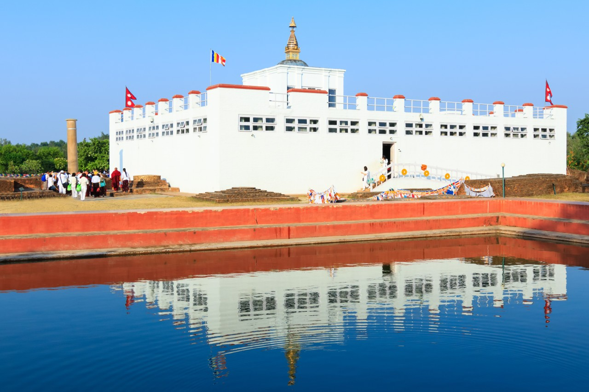

 Lord Buddha, Siddartha Gautam was born in 623 BC. Lumbini is a Buddhist pilgrimage in the Rupandehi distric. The temple of Maya Devi is one of the most important sites in the Lumbini Garden where queen Maya Devi gave birth to the Gautam Buddha. The Ashoka Pillar is the stone Pillar along with the four stupas and a pillar. Monk in saffron-robed clothing can also be seen there.